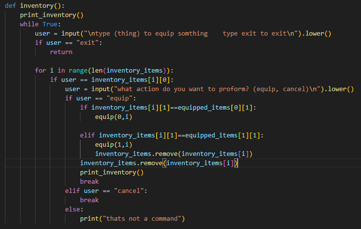

i made the inventory system with stats and items. it also has functions to equip wepons and armor. it has two occumpaning functions, one to equip an item, and one to print the inventory
i need to use insert instead of append so it doesnt change the index value, because it is causing errors.
charlie told me that i should make it easier to read because it is not obvios. i will probably do this by changing the colours. he also said that i should split up the stats more.
i tested it again and it works exept for if you cancel when you select an item. when you do this the item leaves your inventoy but does not get equipped. i will fix this by moving the remove code to only happen if you chosse to equip.
the model was genraly quite good although the jaw didnt connect to the rest of the skull properly
tristrum also noticed the jaw and said the head was too blocky
i ajusted the position of some of the polygons and added 4 more to smooth out the head and connect the jaw properly
the legs were rotated wrong and the knees bent weird
charlie said i should rig the arms and shoulders differntly so they move properly
i ajusted the settings on the legs so the bent properly and ajusted the verticies so they didnt rotate weird. i also rigged the arms and shoulders differntly so the arms would move correctly
the arms moved weird
charlie said the arms were weird and the feet looked wrong
i ajusted the rigging of the feet a little and changed the placement of the arms so the animation would look better.